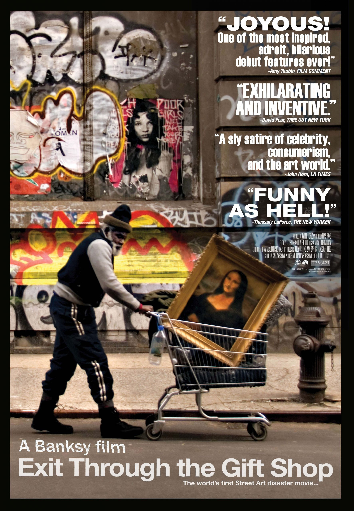
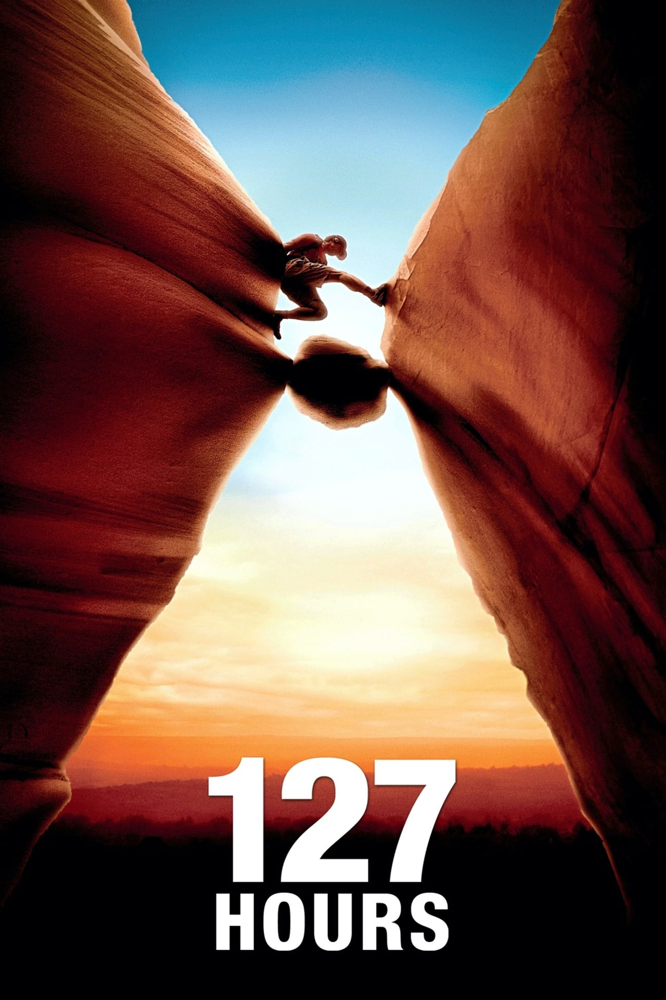

| Movies | About | IMDb rating |
|---|---|---|
Inception
|
A thief who steals corporate secrets through the use of dream-sharing technology is given the inverse task of planting an idea into the mind of a C.E.O., but his tragic past may doom the project and his team to disaster. | 8.8 / 10 |
Incendies
|
Twins journey to the Middle East to discover their family history and fulfill their mother's last wishes. | 8.3 / 10 |
Black Swan
|
A committed dancer struggles to maintain her sanity after winning the lead role in a production of Tchaikovsky's "Swan Lake". | 8.0 / 10 |
The King's Speech
|
The story of King George VI, his impromptu ascension to the throne of the British Empire in 1936, and the speech therapist who helped the unsure monarch overcome his stammer. | 8.0 / 10 |
| Exit Through The Gift Shop  |
Following the style of some of the world's most prolific street artists, an amateur filmmaker makes a foray into the art world. | 8.0 / 10 |
I Saw The Devil
|
A secret agent exacts revenge on a serial killer through a series of captures and releases. | 7.8 / 10 |
| Scott Pilgrim Vs. The World |
In a magically realistic version of Toronto, a young man must defeat his new girlfriend's seven evil exes one by one in order to win her heart. | 7.5 / 10 |
Tucker and Dale Vs. Evil
|
Affable hillbillies Tucker and Dale are on vacation at their dilapidated mountain cabin when they are mistaken for murderers by a group of preppy college students. | 7.5 / 10 |
| 127 Hours  |
A mountain climber becomes trapped under a boulder while canyoneering alone near Moab, Utah and resorts to desperate measures in order to survive. | 7.5 / 10 |
| Biutiful |
A man dying of cancer tries his best to leave the world on his own terms. | 7.5 / 10 |